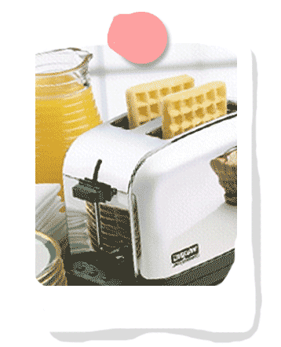

Welcome to Toast for All!
This site is dedicated to the best kitchen applicance ever created: the Toaster! This is the hub of all things toaster related, so enjoy your stay, fellow toaster enthusiasts!
A Brief Toaster History
Toasters B.C. (Before Crunch)
Toasting bread has been around since the Roman times, when toasting was used to prolong the life of bread.
Our Toaster Forefathers
The first electric toaster was invented in 1893 in Great Britain by Crompton and co and re-invented in 1909 in the United States. Those antique toasters only toasted 1 side of the bread at a time and required a person to turn it off manually when the toast looked done.
The Modern Toaster
Charles Strite invented the modern timer, pop-up toaster in 1919.
